Desktop Forge
デスクトップの片隅に置く、小さな鍛冶工房。打った剣は売るか、冒険者へ渡すか。渡した剣は、帰ってこないこともある。
A tiny forge that lives in the corner of your desktop. Sell each blade, or hand it to a passing adventurer — some of them never come back.
デスクトップの片隅に置く、小さな鍛冶工房。打った剣は売るか、冒険者へ渡すか。渡した剣は、帰ってこないこともある。
A tiny forge that lives in the corner of your desktop. Sell each blade, or hand it to a passing adventurer — some of them never come back.
『Desktop Forge』は、作業中のデスクトップの片隅に置いたまま進行する、放置型の制作・経営シミュレーションです。
工房で働く職人はそれぞれ個性と好き嫌いを持ち、プレイヤーが直接指示を出さなくても、許可された仕事の範囲で自律的に素材を集め、加工し、剣を打ちます。同じ作業場や休憩所に居合わせた職人同士は互いに反応し、その日の調子が変わります。
打ち上がった剣には、切れ味・耐久力・エンチャントの配分と、10種類の型があります。プレイヤーは1本ごとに、売却して資金に変えるか、工房を訪れた冒険者へ譲渡するかを選びます。
売却で見られるのは配分の均整ですが、冒険では行き先ごとに求められる偏りが異なります。同じ剣が、売れば凡庸で、渡せば最適解になる。この評価軸のねじれが、判断の中心にあります。
譲渡した剣は冒険者が装備し、冒険の顛末がログとして返ります。報酬と名声を持ち帰ることもあれば、剣が砕け、冒険者が負傷し、あるいは帰らないこともあります。その記録は工房の年表に残り続けます。
| タイトル | Desktop Forge |
|---|---|
| ジャンル | 放置・制作経営シミュレーション / デスクトップコンパニオン |
| プラットフォーム | PC（Windows / Steam） |
| 対応言語 | 日本語、英語（テキスト・音声なし） |
| 発売時期 | 2027年前半 予定 |
| 価格 | 未定 |
| デモ版 | 公開予定 |
| 開発 | Nulpoyo（個人開発） |
| Steam | store.steampowered.com/app/5016990/ |
Nulpoyo（ぬるぽよ）。日本の会社員。本業のかたわら、個人でゲームを制作しています。
作り手としても遊び手としても「やり込めるゲーム」が好きで、放っておくと難易度が高くなりがちです。『Desktop Forge』でも、デスクトップの片隅で眺めていられる手触りと、数字を詰めていく余地の両立を狙って、バランス調整に最も時間をかけています。
Desktop Forge is an idle crafting and management sim that runs in a small window at the edge of your desktop while you work.
Your smiths each have their own traits and likes, and they work on their own. You never assign tasks directly — you decide which jobs each of them is allowed to take, and let the personalities collide. Who ends up at the same workbench changes what comes out of it.
Every finished sword has a split between edge, durability and enchantment, across ten distinct blade types. For each one, you choose: sell it for cash, or give it to an adventurer who stops by.
Buyers pay for balance. Dungeons reward specialization, and each destination rewards a different one. The same sword can be mediocre on the market and perfect for the road — that tension is the core of the game.
A sword you hand over comes back as an adventure log, with coin and renown. Or it comes back broken, with its bearer wounded. Or it doesn't come back at all. Either way it goes into your workshop's chronicle, and you decide what to forge next.
| Title | Desktop Forge |
|---|---|
| Genre | Idle crafting & management sim / desktop companion |
| Platform | PC (Windows / Steam) |
| Languages | English, Japanese (text; no voice acting) |
| Release | H1 2027 |
| Price | TBA |
| Demo | Planned |
| Developer | Nulpoyo (solo) |
| Steam | store.steampowered.com/app/5016990/ |
Nulpoyo. A solo developer based in Japan, making games alongside a full-time office job.
I like games with a lot to chew on — which means mine tend to end up harder than I intended. Most of the work on Desktop Forge has gone into balancing: keeping it something you can leave running at the edge of your screen, while still leaving numbers worth pushing on.
クリックで原寸（1920×1080 PNG）。現在は英語UIのみです。
Click for full resolution (1920×1080 PNG).
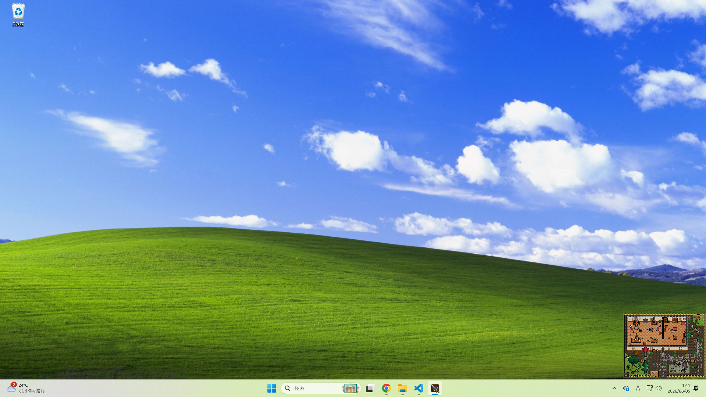
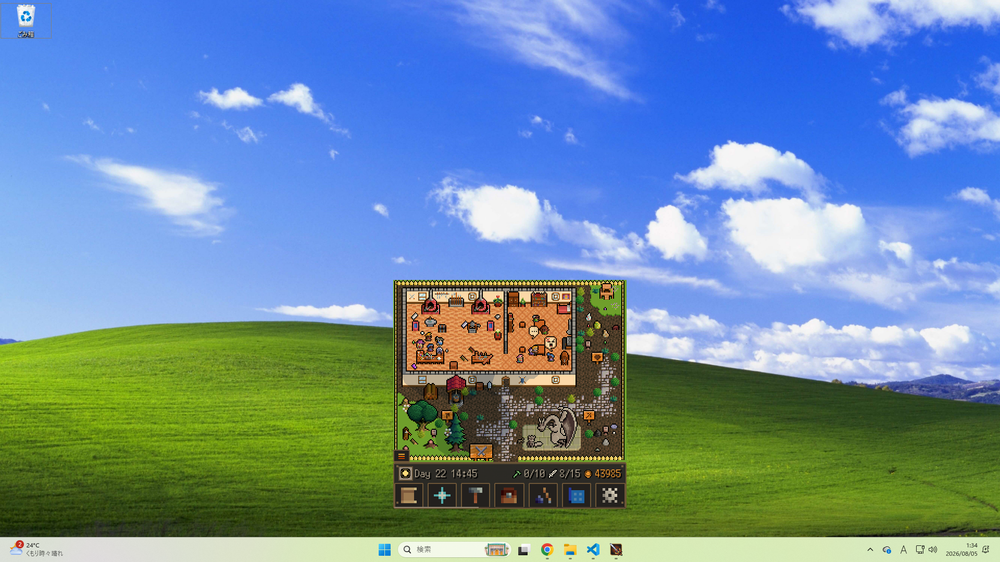
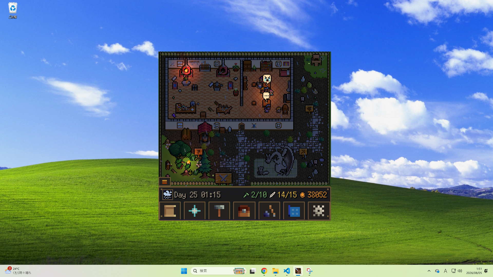
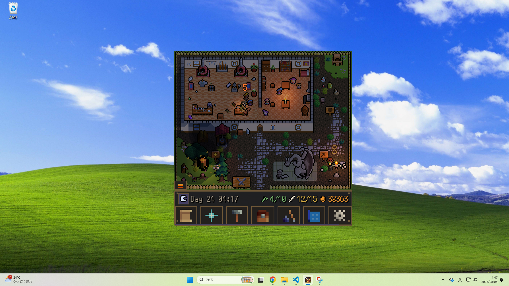
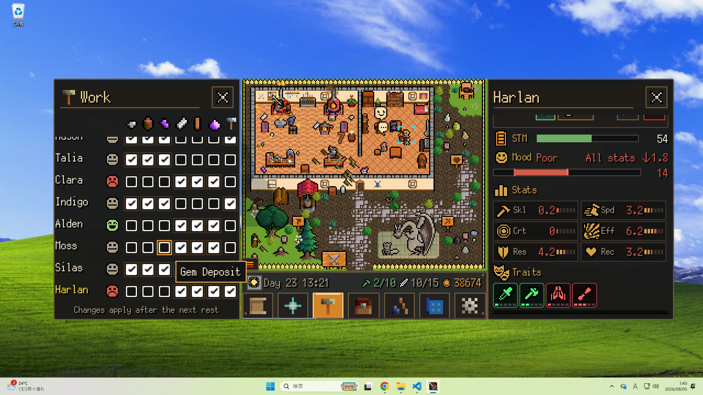
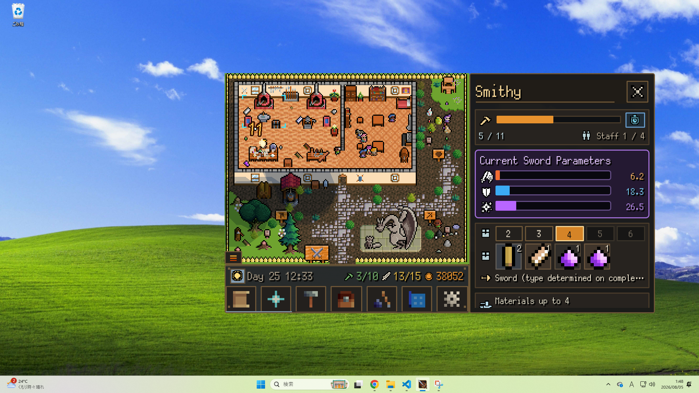
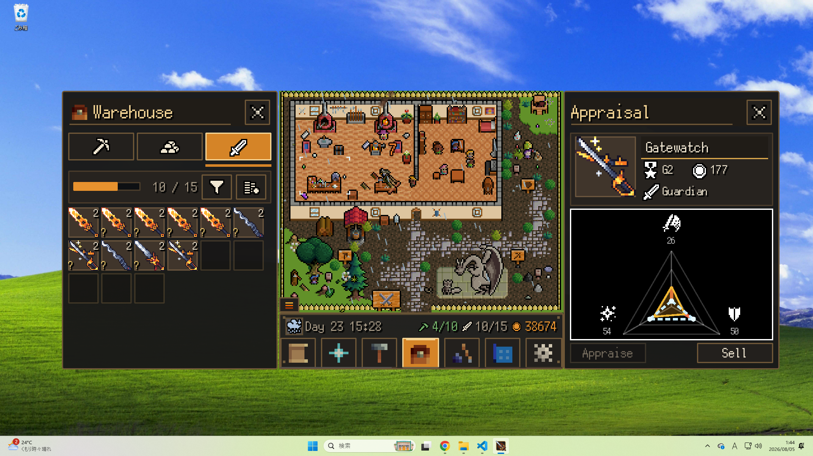
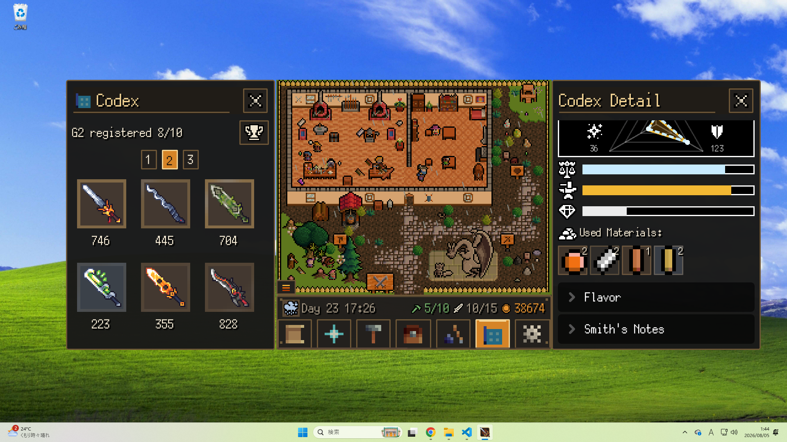
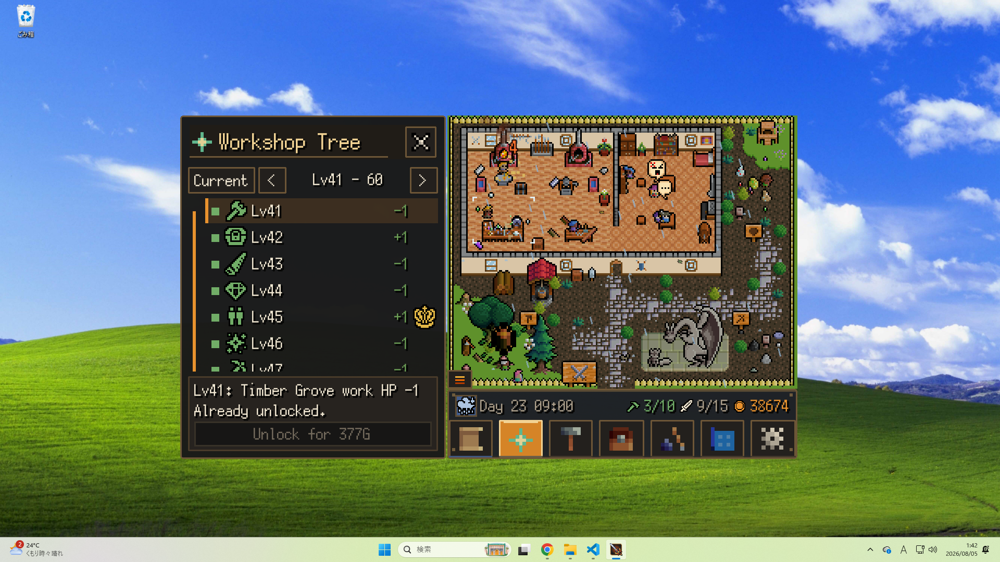
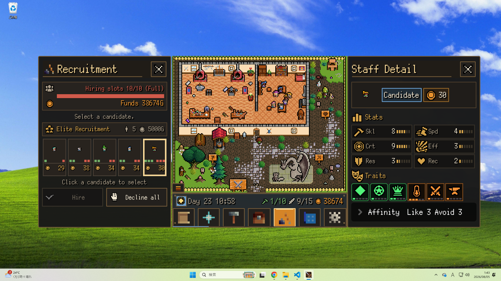
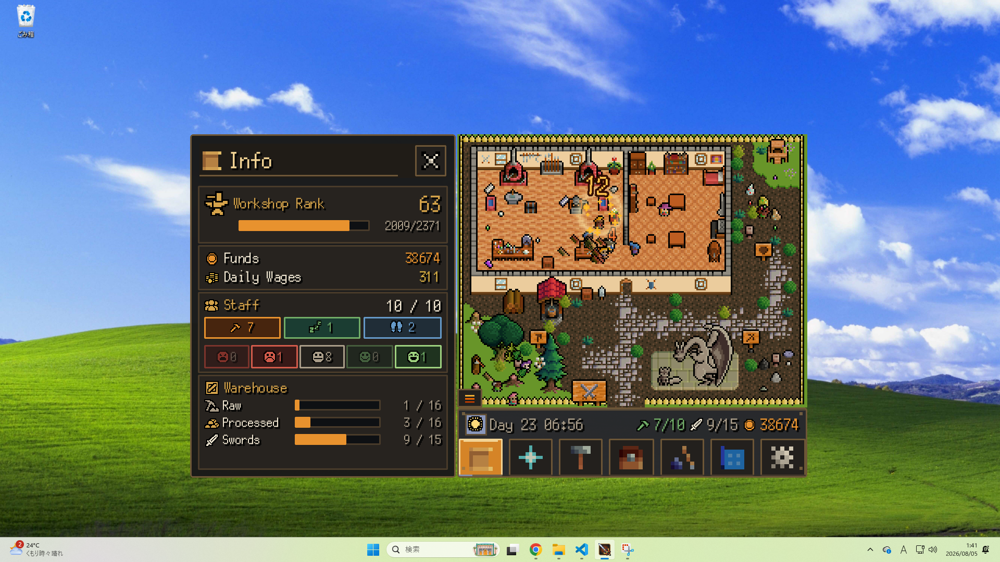
記事や投稿にそのままお使いいただけます。GIF 版が必要な場合はご連絡ください。
Short silent loops, free to embed as-is. Ask if you need them as GIFs.
zip にはスクリーンショット11枚（1920×1080 PNG）、ループ動画5点、ファクトシート（日英）が入っています。トレーラーは容量が大きいため別ダウンロードです。
The zip contains 11 screenshots (1920×1080 PNG), 5 short loops, and both fact sheets. The trailer is a separate download.
本プレスキットに含まれる画像・動画・テキストは、記事・動画・配信でのご使用が自由です。実況・収益化を含む配信も許可しています。事前・事後のご連絡は不要です。特定の場面のキャプチャや追加の素材が必要でしたら、お気軽にお申し付けください。
All assets in this press kit are free to use in articles, videos and streams, including monetized content. No permission or notification needed. If you need a specific scene captured or a different asset, just ask.
| 開発 | Nulpoyo（個人開発） |
|---|---|
| メール | xz585a@gmail.com |
| Steam | store.steampowered.com/app/5016990/ |
| Developer | Nulpoyo (solo) |
|---|---|
| xz585a@gmail.com | |
| Steam | store.steampowered.com/app/5016990/ |
{kind=link}
{kind=link}
{kind=link}
{kind=link}
{kind=link}
{kind=link}
{kind=link}
{kind=link}
{kind=link}
{kind=link}
{kind=link}